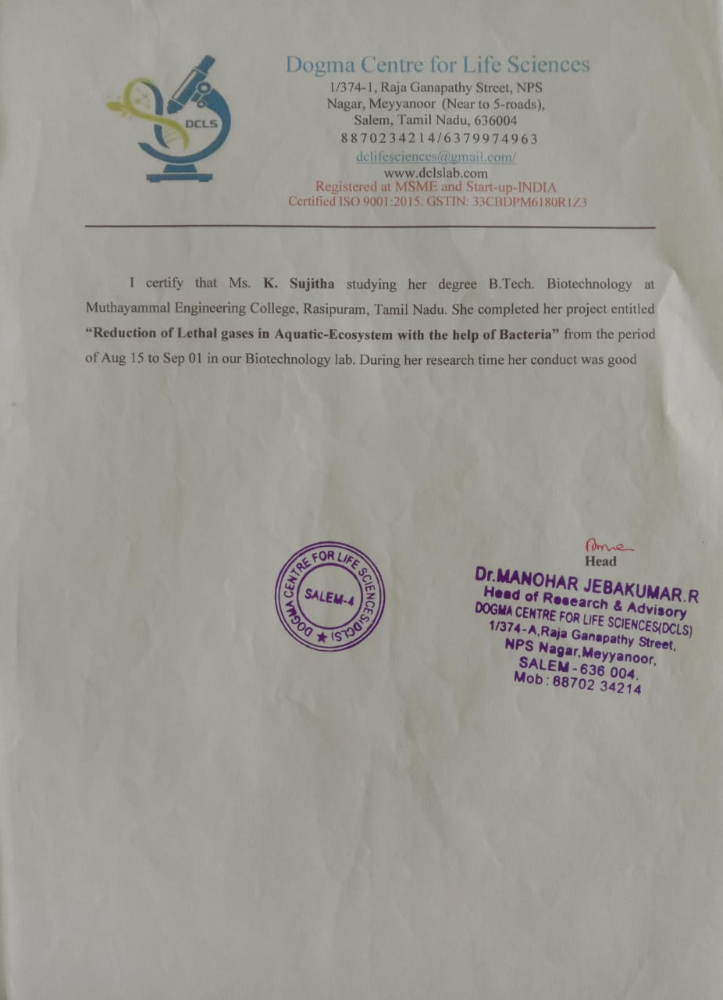
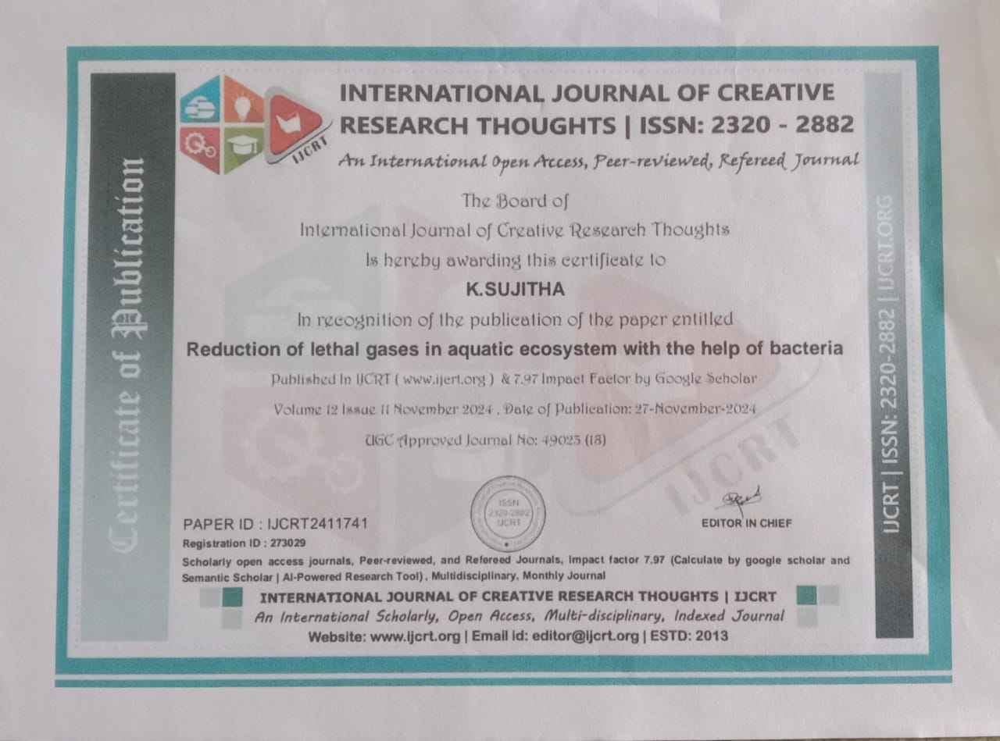
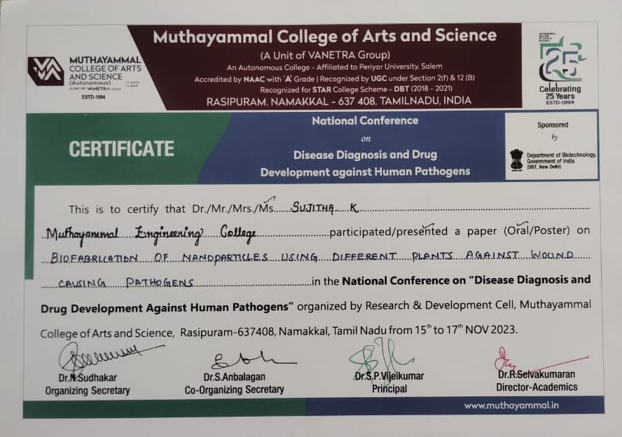
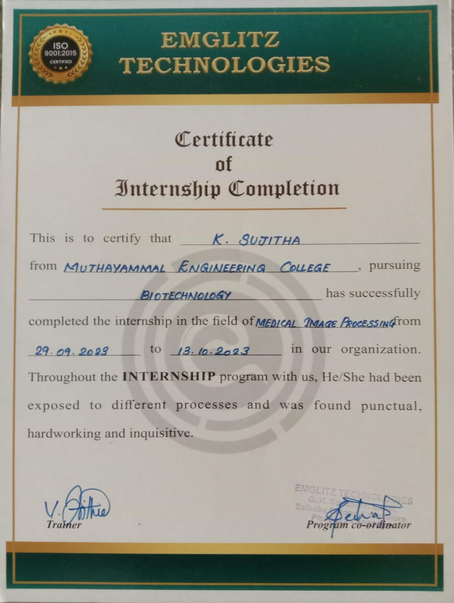
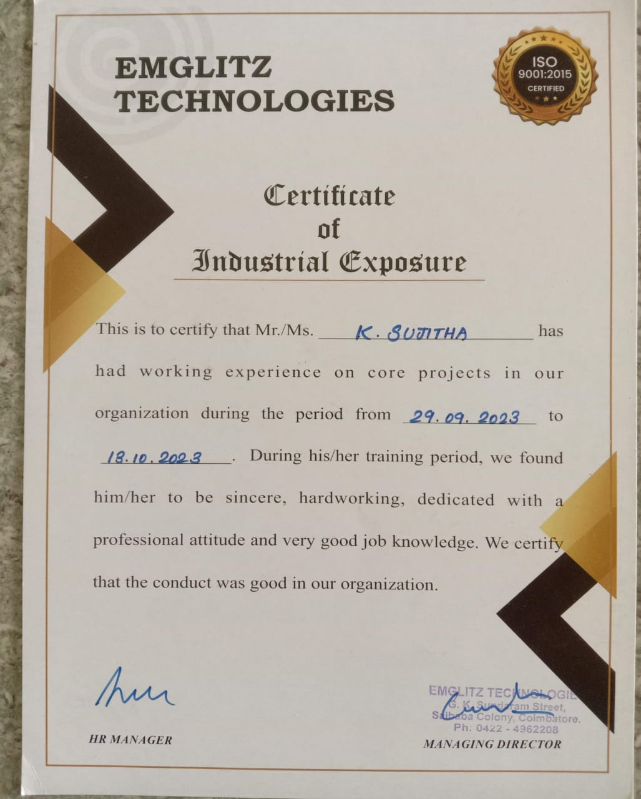
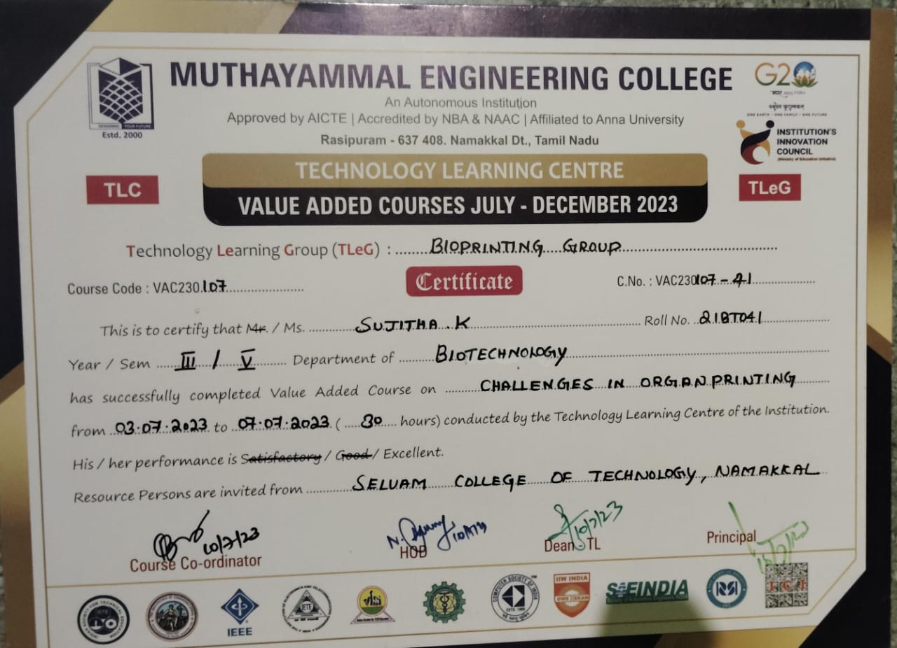
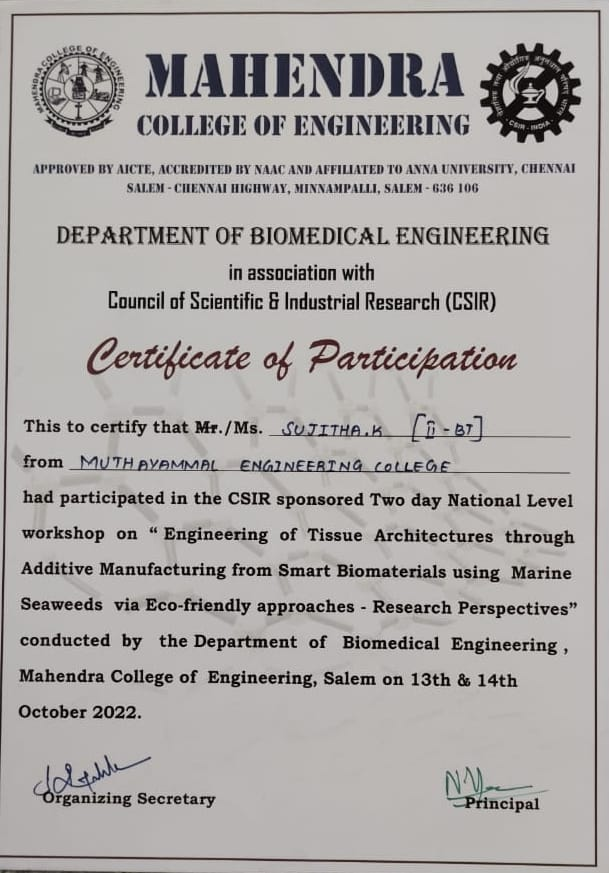

My Blogs
Mini Project certificate & Certification of Publication
Reduction of lethal gases in aquatic ecosystem with the help of bacteria.
 
Bacteria play a crucial role in mitigation lethal gases in aquatic ecosystem, improving water quality and supporting aquatic life.Application of my project Aquaculture , Waste water treatment,lake and river restoration.
Paper presentation certification
Biofabrication of Nanoparticles using Plant Extracts against Wound- Causing Pathogens:
Presented a research paper on "Biofabrication of Nanoparticles using Plant Extracts against Wound-Causing Pathogens"at the National Conference on Disease Diagnosis and Drug Development against Human Pathogens, organized by the Research and Development Cell, Muthayammal College of Arts and Science, Rasipuram. The study explored the potential of plant-based nanoparticles in combating wound infections, offering a novel and sustainable approach to antimicrobial therapy.
Process of organ printing and its types:

Organ printing, also known as bioprinting, is a rapidly evolving field that aims to create functional organs and tissues using 3D printing technology.
AI in Biotech:

The convergence of Artificial Intelligence (AI) and Biotechnology is transforming the field of biotech, enabling breakthroughs in disease diagnosis, drug discovery, and personalized medicine..
Internet of things:

The Internet of Things (IoT) refers to the network of physical devices, vehicles, home appliances, and other items embedded with sensors, software, and connectivity, allowing them to collect and exchange data.
Internship/Mini project
Medical image processing:
 Medical image processing is the use of computational techniques to analyze, manipulate, and visualize medical images, such as X-rays, CT scans, MRI scans, and ultrasounds. The goal of medical image processing is to improve diagnostic accuracy, enhance patient care, and facilitate medical research.
Morphological Image Classification:

This mini project focuses on developing a morphological image classification system for medical images. The goal is to classify images based on their morphological features, such as shape, size, and texture.
Value Added Course
Challenges in organ printing:
Successfully completing the value-added course on 'Challenges in Organ Printing' conducted by Muthayammal Engineering College, Rasipuram. Gained insights into the latest advancements and obstacles in 3D printing of organs, equipping me with knowledge to tackle complex challenges in the field of tissue engineering and regenerative medicine.
Data Structures and Web Development:

Data structures in Python are used to organize and store data in a way that allows for efficient access, modification, and manipulation and Web development in Python involves using Python programming language to build web applications, web services, and web APIs.
Biological Waste Management:

Successfully completing the value-added course on 'Biological waste management' conducted by Muthayammal Engineering College, Rasipuram. Biological waste management refers to the processes and techniques used to handle, treat, and dispose of biological waste materials.
Workshop certification
Engineering of Tissue Architectures through Additive Manufacturing from Smart Biomaterials using Marine Seaweeds via Eco-friendly approaches: Research Perspectives:
Explored the frontiers of biomaterials and additive manufacturing by participating in a two-day National Workshop on "Engineering of Tissue Architectures through Additive Manufacturing from Smart Biomaterials using Marine Seaweeds via Eco-friendly approaches: Research Perspectives" at Mahendra College of Engineering, Salem. Engaged with experts and peers to discuss innovative solutions for tissue engineering and regenerative medicine, leveraging marine seaweeds and eco-friendly approaches.
Fatty Liver Disease: Pathophysiology Diagnosis and emerging therapies::

Fatty Liver Disease: Pathophysiology, Diagnosis, and Emerging Therapies Fatty Liver Disease (FLD), also known as hepatic steatosis, is a condition characterized by excessive fat accumulation in liver cells. It is a spectrum of disease, ranging from simple steatosis to non-alcoholic steatohepatitis (NASH), fibrosis, and cirrhosis..
Python Programming:

Python is a high-level, interpreted programming language that is widely used for various purposes such as: - Web Development: Building web applications and web services using popular frameworks like Django and Flask. - Data Analysis: Analyzing and visualizing data using popular libraries like Pandas, NumPy, and Matplotlib. - Artificial Intelligence: Building AI and machine learning models using popular libraries like TensorFlow and Keras. - Automation: Automating tasks and processes using Python's easy-to-learn syntax.
Bio Conversion strategies:

Bioconversion is the process of converting organic materials into valuable products using microorganisms, enzymes, or other biocatalysts. Bioconversion strategies involve designing and optimizing biological systems to produce specific compounds or products.